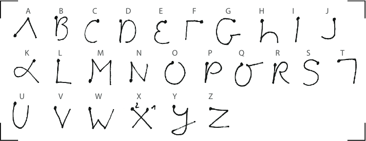
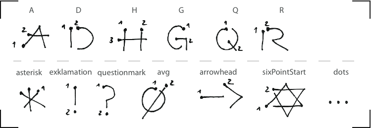
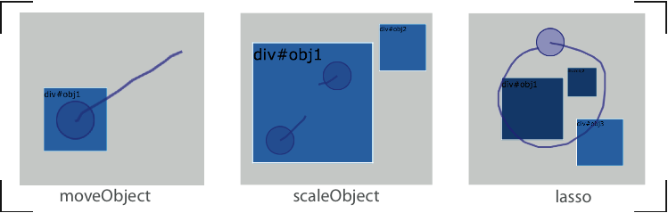

<< back to Test Bench
Gesture Set 1: Implemented unistroke gestures from Graffiti

Gesture Set 2: Multistroke gestures

Gesture Set 3: Multitouch gestures
Gesture Set 4: Object oriented gestures

+ with TAP on an object you can switch its color back to light blue after selecting them with a lasso gesture